module
MDL-analog_processing_ic (Github)
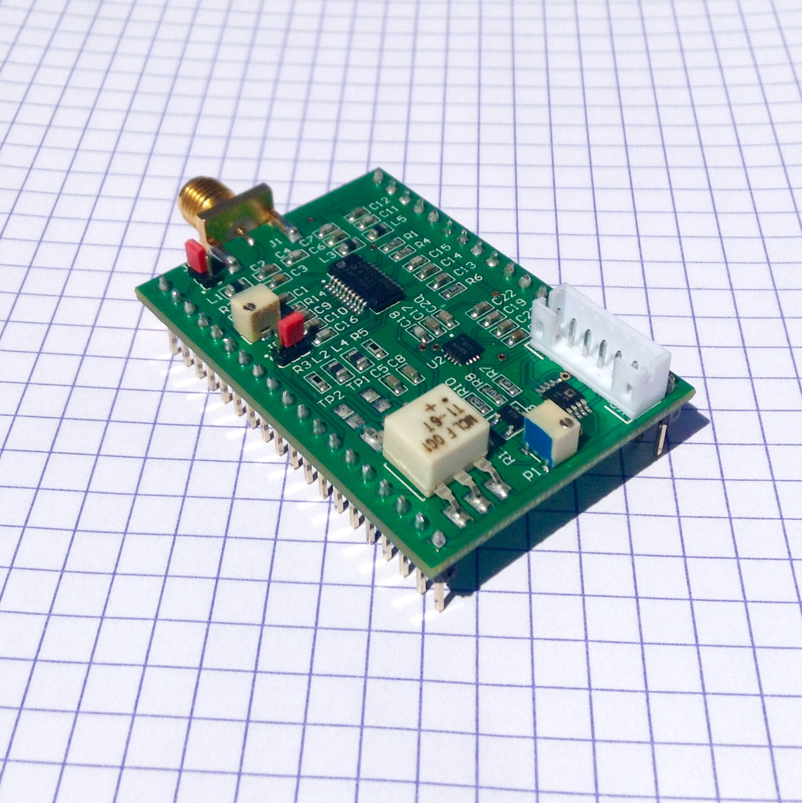
name
title
Goblin: a TGC-Envelop-ADC module, MDL - goblin_tgcenvadc
description
- The analog signal-processing heart of the echOmods
- version: V0.1
- date: 24/04/2016
- cost:150$
- sourcing:Custom made, get the Gerbers, or on Tindie, or contact @kelu124
- technology: Module-compatible, Homemade PCB, ICs based on
AD8331andADL5511 - language: Altium
- author: Kelu124
ios
inputs
ITF-A_gndITF-B_5vITF-S_3_3vITF-G_gain_controlITF-C_amplified_raw_signal: because it's used internallyITF-E_signal_envelope: because it's used internallyITF-R_reserved: for the signal coming from the pulser (if through track R)ITF-mET_SMA: for the signal coming from the pulser (if through SMA)
outputs
ITF-C_amplified_raw_signal: Amplified Raw Signal, post TGC, before the enveloppe detectionITF-E_signal_envelope: enveloppe of the signal, post TGCITF-mEG_SPI: signal from the ADC
key_components
ADL5511: Enveloppe detectionAD8331: TGCAD7274: 2Msps SPI ADCAD8691: OA
information
what_is_it_supposed_to_do_
The aim of this echOmod is to get the signal coming back from a transducer, and to deliver the signal, analogically processed, with all steps accessible to hackers.
With more details, this Goblin board aims at getting a signal, and giving access to key points within the signal processing chain for ultrasound imaging, namely:
- Getting access to a TGC
- Getting the enveloppe of the signal
- Cleaning the signal before feeding in the on-board SPI ADC
All key signals are accessible, and jumpers, as well as pots, enable on-board fine-tuning of the signals. See more details on the testing session, to see the behavior of the board on a oscillo.
It's also a first try at a SPI ADC. Using a up to 3 Msps one in order to catch only the enveloppe, to be tested with other uC, RPi or BBB. Test have been also done with 6MSps, arduino IDE-compatible, STM32.
how_does_it_work_block_diagram
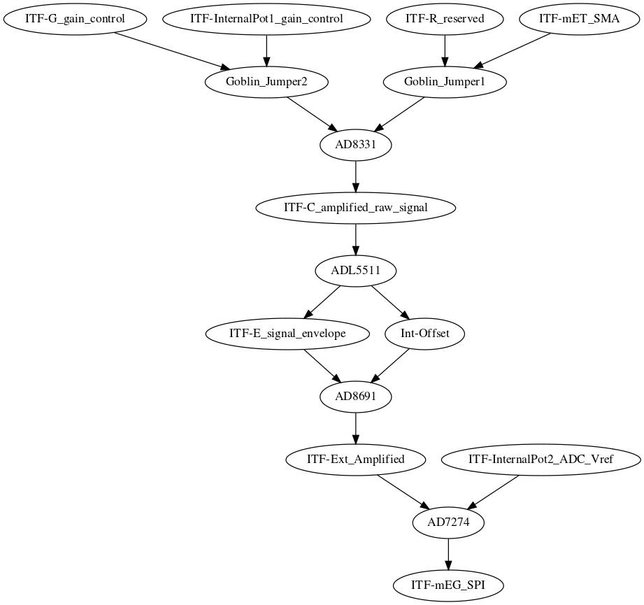
ITF-G_gain_control->Goblin_Jumper2->AD8331->ITF-C_amplified_raw_signal->ADL5511->ITF-E_signal_envelope->AD8691->ITF-Ext_Amplified->AD7274->ITF-mEG_SPIITF-R_reserved->Goblin_Jumper1->AD8331ITF-mET_SMA->Goblin_Jumper1ITF-InternalPot1_gain_control->Goblin_Jumper2ITF-InternalPot2_ADC_Vref->AD7274ADL5511->Int-Offset->AD8691
This can be summarized below - all the signals represented are accessible via separate on-board pins:
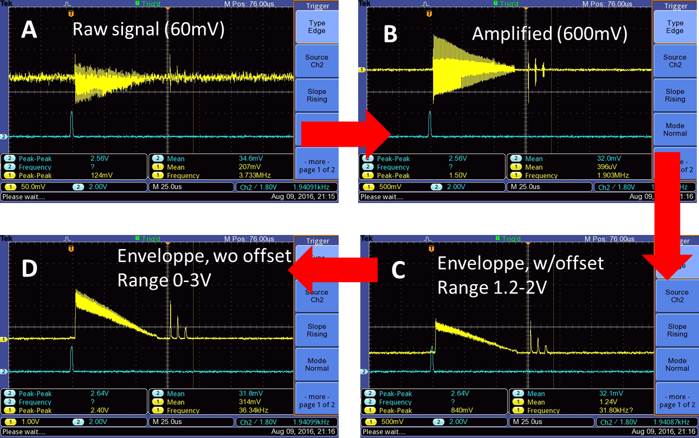
Input/Output:
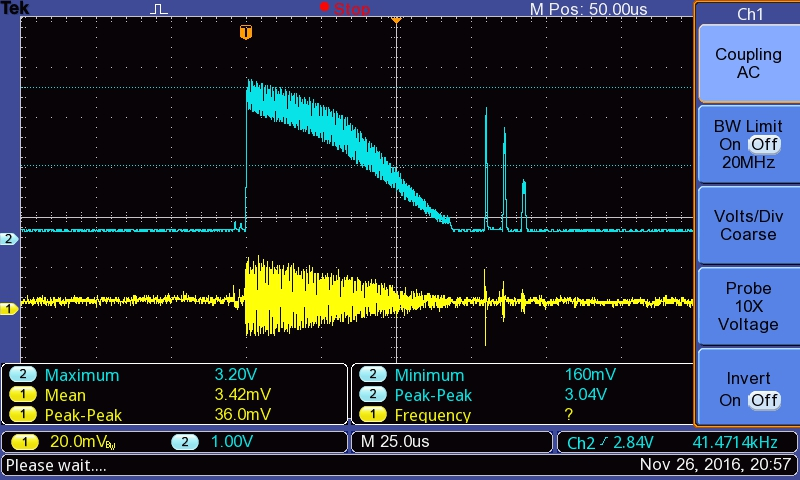
about_the_module
pros
- Only needs 5V and 3.3V inputs.
- Energy use is relatively low: at 9V, Tobo, Goblin, and a trinket pro ask for 180mA.
- ADC V_REF is flexible: better resolution in output of the ADC
- E_REF is being removed from the signal output, better than Murgen, where we lost 1.1V from the signal range.
cons_what_to_to_make_better
- Takes a lot of space because of the modularity. Jumpers and pots could be removed, not to mention SMA.
- The amplifier removing E_REF brings in some noise: a filter could be used there to remove to high frequencies.
- The SMA brings little, but still a noise analysis could be done to assess the difference between routing the signal through a SMA cable or through the pins.
- There are only two layers. A fourth one to connect each pin to the other pin on the same row, as well as a ground plane, could help with the noise.
- Little flexibility from the use of ICs - but sufficient of sorts for our use.
- The ADC is borderline in terms of speed of use. A higher sampling rate could be useful.
- There was a bug with the ADL5511: need to know how it shuts down.
detailed_view
explained
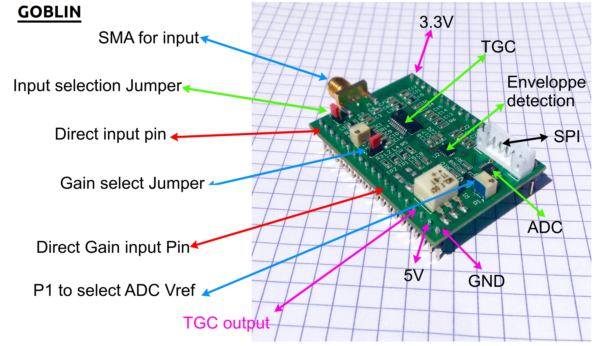
in_out
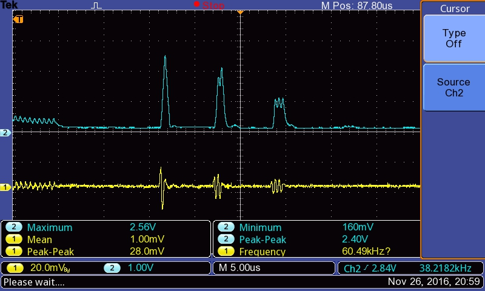
comparing_the_signals_amplified_signal_vs_enveloppe_detected
The overall signal
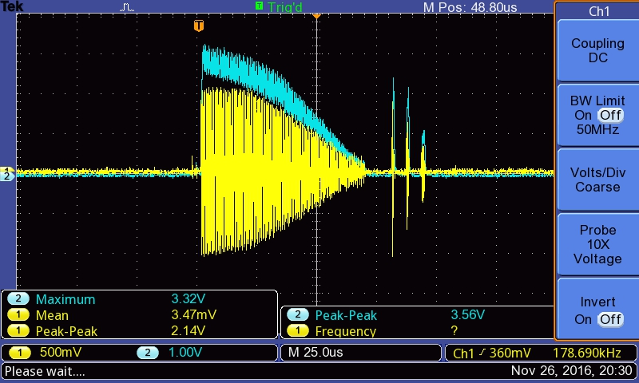
Details
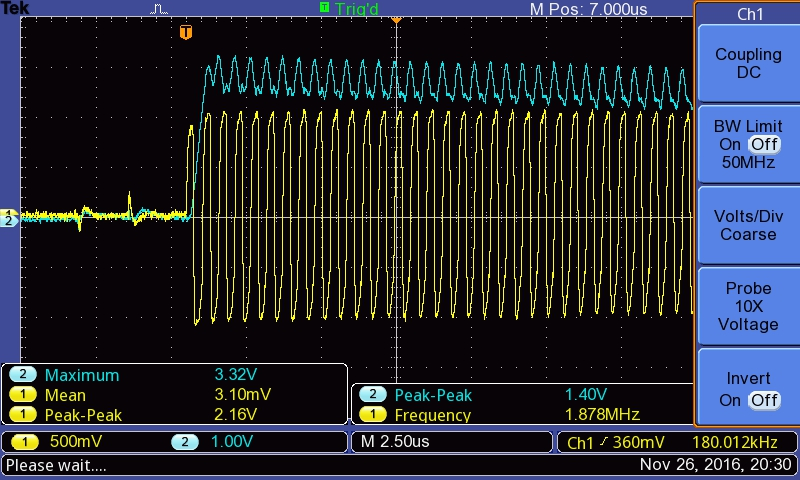
Details on the peaks
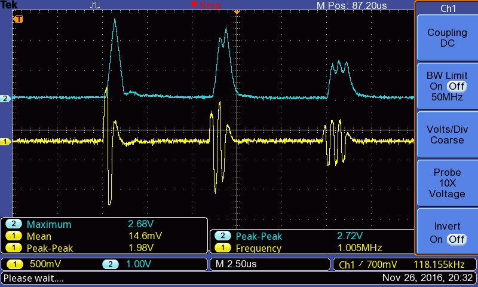
schematics
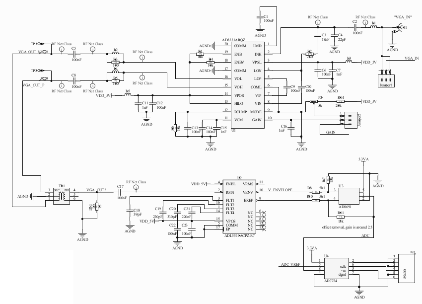
constraint_and_limits
tests
signal_in_vs_signal_out_of_the_tgc
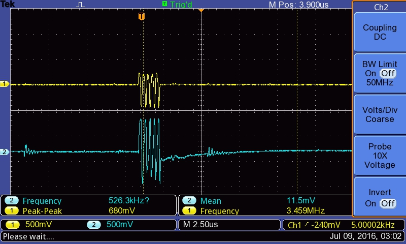
trying_with_different_frequencies
at_3_mhz
at_5mhz
at_7_5mhz
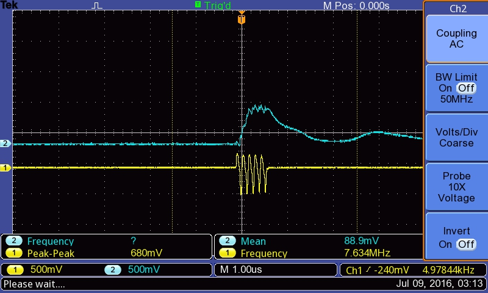
at_10mhz
difference_between_enveloppe_and_adc_input_
-> the offset is removed, there's also a small gain (x2).
See below: there's an offset at the enveloppe detection (~RMS), which is removed. Enveloppe is 500mV before, comes at 1V+ afterwards.
before_the_aop
after_the_aop
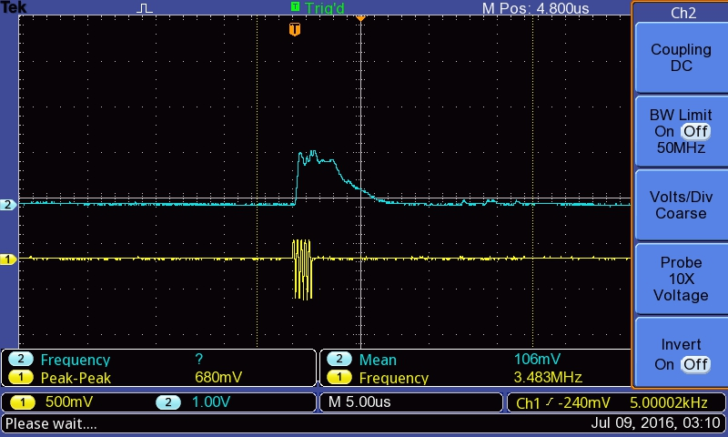
discussions
todo
- BONUS! Plug it to a RPi0 or BBB or RPi or else.
- BONUS! or test it with the EMW3165.
- Publish the sources in KiCAD (@Sofian maybe?)
done
- Check the power consumption
- Specs to write
- Agreeing on the strips
- Check if 5V and 3.3V are stable
- Defining the ICs to use
- Getting schematics
- Send microcircuits to Edgeflex
- Receive the module
Copyright Murgen and Kelu124 (murgen@echopen.org , luc@echopen.org / kelu124@gmail.com ) 2015-2018
Image gallery
![[image]](images\slide_principle.png)
![[image]](images\TEK0000.JPG)
![[image]](images\TEK0002.JPG)
![[image]](images\TEK0005.JPG)
![[image]](images\TEK0009.JPG)
![[image]](images\TEK0010.JPG)
![[image]](images\TEK0011.JPG)
![[image]](images\us_#2_bottom.png)
![[image]](images\us_#2_top.png)
![[image]](images\2016-07-08\TEK0000.JPG)
![[image]](images\2016-07-08\TEK0001.JPG)
![[image]](images\2016-07-08\TEK0002.JPG)
![[image]](images\2016-07-08\TEK0003.JPG)
![[image]](images\2016-07-08\TEK0004.JPG)
![[image]](images\2016-07-08\TEK0005.JPG)
![[image]](images\2016-07-08\TEK0006.JPG)
![[image]](images\2016-07-08\TEK0007.JPG)
![[image]](images\2016-07-08\TEK0008.JPG)
![[image]](images\2016-07-08\TEK0009.JPG)
![[image]](images\2016-07-08\TEK0010.JPG)
![[image]](images\2016-07-08\TEK0011.JPG)
![[image]](images\2016-07-08\TEK0012.JPG)
![[image]](images\2016-07-08\TEK0013.JPG)
![[image]](images\2016-07-08\TEK0014.JPG)
![[image]](images\2016-07-08\TEK0015.JPG)
![[image]](images\2016-07-08\TEK0016.JPG)
![[image]](images\2016-07-08\TEK0017.JPG)
![[image]](images\2016-07-08\TEK0018.JPG)
![[image]](images\2016-07-15\TEK0000.JPG)
![[image]](images\2016-07-15\TEK0001.JPG)
![[image]](images\2016-07-15\TEK0002.JPG)
![[image]](images\2016-07-15\TEK0003.JPG)
![[image]](images\2016-07-15\TEK0004.JPG)
![[image]](images\module\GoblinModule.png)
![[image]](images\module\ModuleA.jpg)
![[image]](images\module\ModuleB.jpg)
![[image]](images\module\ModuleC.jpg)
![[image]](images\module\schematics.png)
![[image]](source\blocks.png)
![[image]](source\blocks.svg)
![[image]](source\goblin_kicad_1.png)
![[image]](source\goblin_kicad_2.png)
{kind=link}
Attached documents
goblin_prelim_schematics.pdf LICENSE.txt Status Report.Txt us_#2.TXT AD7274 - 7273 7276.pdf ADL5511.pdf slide_principle.ppt Status Report.Txt us_#2.TXT